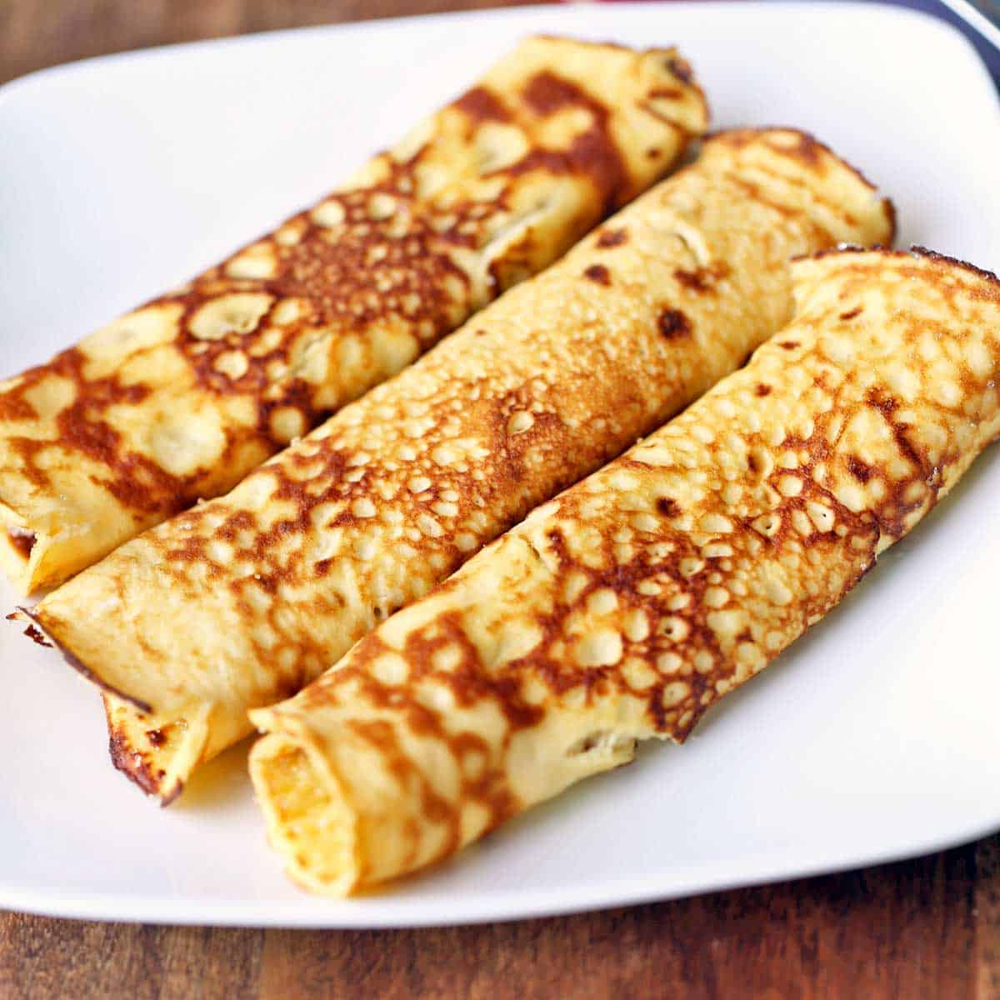

Recipe for Pancakes

Description
Pancakes are a type of flatbread that are often thin and round. They are usually prepared from a starch-based batter that may contain eggs, milk, and butter and cooked on a hot surface such as a griddle or frying pan.
Ingredients
- Flour
- Eggs
- Milk
- Butter
- Sugar
Steps
- Combine flour, sugar, baking powder, and salt in a large bowl.
- Whisk eggs and milk together in a separate bowl.
- Pour the wet ingredients into the dry ingredients and stir until just combined.
- Heat a lightly oiled griddle or frying pan over medium-high heat.
Back to index